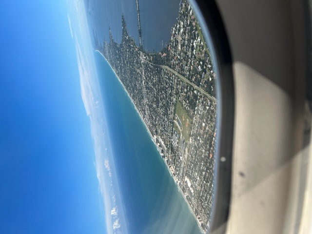

A portfolio of recent projects:
Vestibulum aliquam magna augue, in pretium orci molestie quis. Aliquam erat volutpat. Cras ac leo felis. Maecenas tristique sed massa condimentum mollis. Duis sed facilisis lorem. Aenean imperdiet porttitor leo, sed lobortis mi tincidunt in. Curabitur id urna rhoncus, semper ipsum sed, aliquet nulla. Duis ligula massa, iaculis quis volutpat vitae, aliquet non mi. Cras ullamcorper id ex eu consequat. Integer a orci tincidunt, consequat sapien non, tempus eros.
Fusce mi purus, venenatis in lacinia eget, aliquam et augue. Vestibulum sit amet maximus nunc. Curabitur lacinia elit vitae quam eleifend, nec tincidunt nunc aliquam. Proin ornare purus iaculis lacus accumsan scelerisque. Phasellus interdum justo dui, eu consequat nulla placerat vel. Nunc et tortor et quam aliquet lobortis sed sit amet metus. Ut viverra in massa vel interdum. Nulla quis nunc non est hendrerit blandit at vel dolor. Curabitur et maximus felis, venenatis interdum justo. Nam felis nisl, luctus non dignissim nec, posuere nec sem. Proin id cursus odio. Aenean lorem tortor, cursus ut aliquam id, vestibulum sit amet tortor.
Project 1
I first learned to git
Project 2

Then I learned github
Project 3

And then CSS
Project 4

And a bit more
Project 5
And a bit more